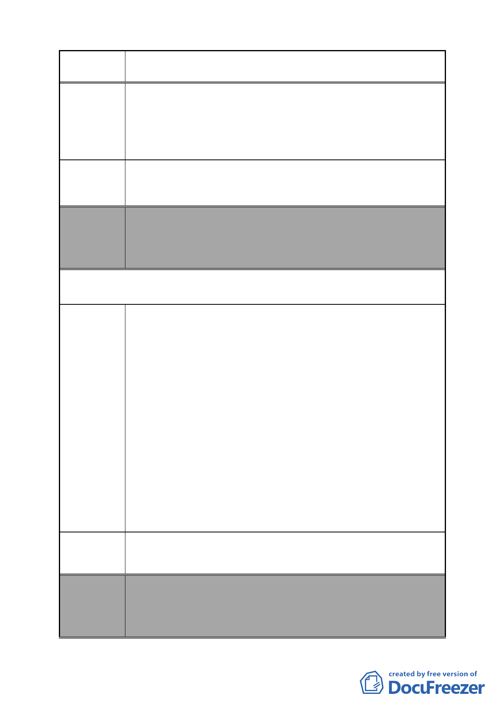

案 名 變更臺北市南港區鐵路地下化沿線土地主要計畫案
建議辦法
委員會
決議
三千個家庭的生計。
5.Ｃ區塊內的南港教會及向陽路 84-110 號居民們，也憂愁於原
本安身立命之地、世代居住的回憶，竟然在都發局的草率規
劃下變成公園，還要忍受拆遷之苦。所以本席希望都發局可
以多聽百姓的聲音、多為百姓著想。
請都發局與文化局、交通局協調，考慮交通便利性和人潮流
動性，規劃離三鐵共構樞紐處較近的低度利用之土地，變更
為公園預定地，把對居民不便和企業的損失降到最低。
本案除文字誤繕應再作修正外，其餘依市府本次會議所送修
正計畫書內容通過。
（依市府本次會議所送修正計畫書，業將陳情地點剔除於市
地重劃範圍）
第 2 次意見（第 10 屆第 5 次定期大會書面質詢）
陳情理由
建議辦法
1.變電所的規劃除了盡供電責任外，不影響週遭環境景觀與安
全，並顧及都市發展及居民的權益也非常重要。在「變更台
北市南港區鐡路地下化沿線土地主要計劃案」中，規劃Ａ區
為玉成變電所預定地，實違反變電所不應設於人口稠密區的
原則。
2.本席認為都委會召開專案小組就是要廣納市民意見，並針對
陳情的內容，提出相關替代方案，同時進行細部計劃的修
改。故本席強烈要求都發局應積極要求台灣電力公司出席專
案小組會議，並同時安排相關專業人士列席，才能為市民生
命安全把關。
3.本席強烈要求都發局（一）拒絕台電雜項執照的展延，並廢
除其建照。(二)在「變更台北市南港區鐡路地下化沿線土地
主要計劃案替代方案」中，剔除Ａ區為玉成變電所預定地的
計劃。(三)並立刻著手規劃 202 兵工廠內更變所用地，讓玉
成變電所遷址於 202 兵工廠內。
搶救市民健康－強烈要求玉成變電所遷址於 202 兵工廠!
委員會
決議
本案除文字誤繕應再作修正外，其餘依市府本次會議所送修
正計畫書內容通過。
（依市府本次會議所送修正計畫書，本案將變電所用地自本
次計畫範圍剔除，俟台電公司另尋適當替代的設置地點，另
- 53 -